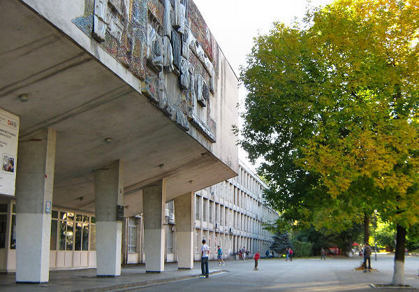

Про кафедру АУТС

Однією з провідних кафедр України, діяльність випускників яких пов’язана з інформатизацією, є кафедра Автоматики та Управління в Технічних Системах факультету Інформатики та Обчислювальної Техніки Національного Технічного Університету України “Київський політехнічний інститут”.
Особливістю підготовки наших випускників є глибоке вивчення найсучасніших високотехнологічних галузей науки і техніки: інформаційних технологій, комп’ютерної, мікропроцесорної техніки та електроніки, систем та мереж передачі даних і телекомунікацій, комп’ютеризованих систем управління. Наші студенти отримують грунтовні знання з: програмування (алгоритмічні мови та програмування, об’єктно-орієнтоване програмування, сучасні технології програмування, системне програмування, бази даних, операційні системи, WEB-технології тощо).
Історія кафедри АУТС
 Історія кафедри АУТС починається з 1945 року, коли було засновно "Кафедру Реле і Автоматики”. У 1963 р. вона отримала назву “Автоматики і Телемеханіки”, а в 1988 р. – “Автоматики та Управління в Технічних Системах” (АУТС). " Кафедра Реле і Автоматики” відокремилась зі складу кафедри центральних електричних станцій для підготовки фахівців з електричних та телемеханічних пристроїв.Протягом свого існування кафедра розвивалася в освітньому і науковому напрямках, освоюючи все складніші досягнення наукового й технічного прогресу у сфері управління в технічних системах.
Окрім основної діяльності – підготовки фахівців зі своєї галузі, на кафедрі виконувалась значна методична і наукова робота. Кафедра тісно співпрацювала з підприємствами й інститутами, виконуючи значні об’єми господарських робіт. Кафедру “Реле і Автоматики” було засновано в КПІ 23 серпня 1945 р. на електроенергетичному факультеті (наказ ©2193К всесоюзної комісії зі справ Вищої Школи при РНК СРСР).
Засновник кафедри професор Гребень Йосиф Ілліч (1897-1973), закінчив КПІ у 1925 році, доцент з 1930 р., а з 1932 професор і завідуючий кафедри електричних станцій, з 1945 р. по 1966 р. завідуючий кафедри автоматики.
Новини

Розклад занять другого семестру
Лютий 15, 2017
Кафедра АУТС є головним партнером Мережевої Академії “CISCO”
Березень 1, 2017